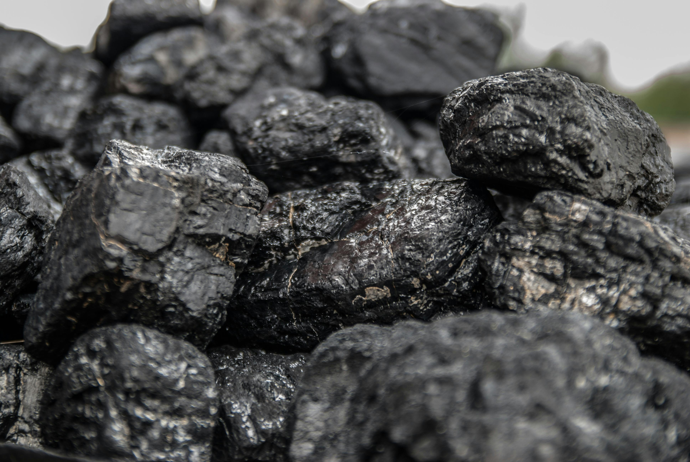

Coal is a combustible, brownish-black to black sedimentary rock formed from ancient, buried plant matter, primarily composed of carbon, hydrogen, oxygen, nitrogen, and sulfur. It forms over millions of years through high-pressure, high-temperature metamorphism of peat, with its quality increasing in rank from lignite to anthracite.